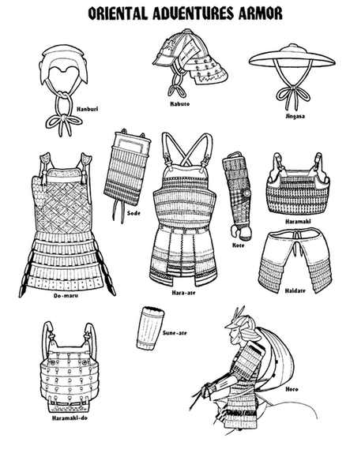

东方护甲图版

图中标注：Hanburi（半头盔）、Kabuto（大头盔）、Jingasa（阵笠）、Sode（袖甲）、Do-maru（胴丸）、Hara-ate（腹当）、Kote（铠袖）、Haramaki（腹卷）、Haidate（腿甲）、Haramaki-do（腹卷胴）、Sune-ate（胫当）、Horo（母衣）。

图中标注：Hanburi（半头盔）、Kabuto（大头盔）、Jingasa（阵笠）、Sode（袖甲）、Do-maru（胴丸）、Hara-ate（腹当）、Kote（铠袖）、Haramaki（腹卷）、Haidate（腿甲）、Haramaki-do（腹卷胴）、Sune-ate（胫当）、Horo（母衣）。